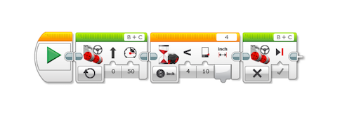
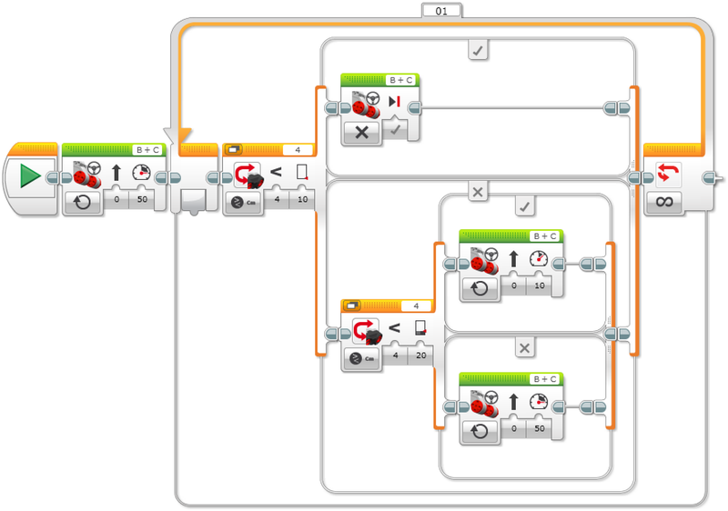
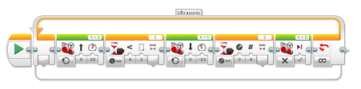

1.Indítsa el a programot.
2.Kapcsolja be mindkét motort 50-es sebességgel.
3.Várja meg, amíg az ultrahangos érzékelő 20 cm-nél kisebb távolságban észlel egy akadályt.
4.Kapcsolja ki mindkét motort.

1.Indítsa el a programot.
2.Kapcsolja be mindkét motort 50-es sebességgel.
3.Ha az ultrahangos érzékelő akadályt észlel 10 cm-nél kisebb távolságban, kapcsolja ki mindkét motort.
Vagy
4.Ha az ultrahangos érzékelő akadályt észlel 20 cm-nél kisebb távolságban, kapcsolja be mindkét motort 10 sebességnél.
VAGY
5.Kapcsolja be mindkét motort 50-es sebességgel.
6.Ismételje meg örökké a 3–7. lépést.

1.Indítsa el a programot.
2.Várja a parancsot:ez ellenőrzi,hogy az érzékelő =, <, > vagy nem =, <, >. Egyenlő egy adott távolsággal egy akadálytól. Az előző parancs folytatja a addig működik, amíg a WAIT parancs teljesül.
3.Kormányzás mozgatása: Bekapcsolja a motorokat a fordított mozgást, ha az érzékelő 4 hüvelyknyi távolságra van egy tárgytól
4.Mozgás Kormányzás: Fordul:kikapcsolja a motorokat